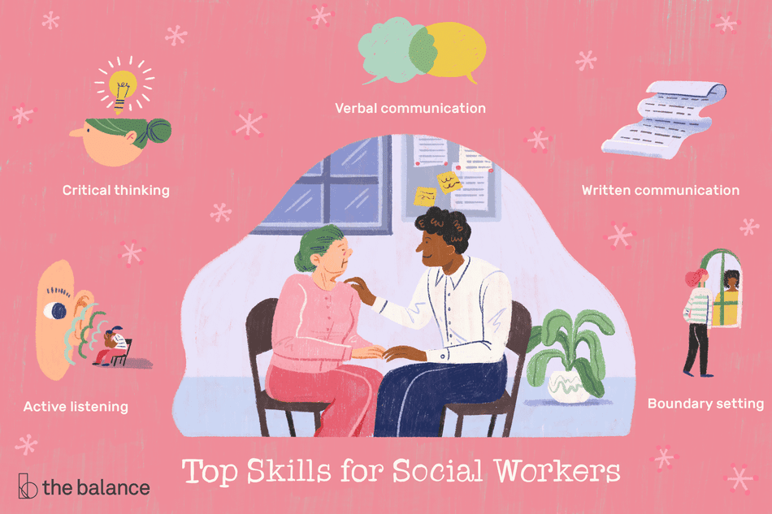
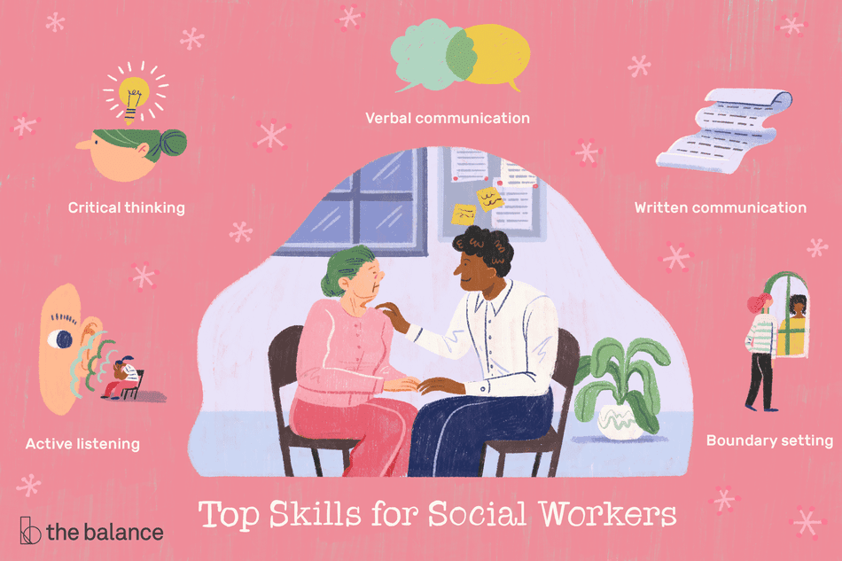

Portfolio



Hello, I am a social worker in Los Angeles. My job revolves around helping my clients handle everyday life problems. I often assist clients who have issues caused by negelect, abuse, domestic violence, mental heath and parental substance abuse. I support individuals through difficult times and ensure that vulnerable people, including b otth children and adults, are safeguarded from harm. I have experieneced some very harsh cases but must maintain a professional relationship even if I become too invested my feelings must not get involvged in any case. I assist in advocating for appropriate public assistnance resources for my clients. I refer individuals to appropriate treatment centers and coordinate treatment planning and maintaining ongoing contact with outpatient providers for the continual care of patients. My clients' challenges range from physical and mental illness to child care and crises such as domestic violence, I am a social worker in Los Angeles. My job revolves around helping my clients handle everyday life problems. I often assist clients who have issues caused by negelect, abuse, domestic violence, mental heath and parental substance abuse. I support individuals through difficult times and ensure that vulnerable people, including b otth children and adults, are safeguarded from harm. I have experieneced some very harsh cases but must maintain a professional relationship even if I become too invested my feelings must not get involvged in any case. I assist in advocating for appropriate public assistnance resources for my clients. I refer individuals to appropriate treatment centers and coordinate treatment planning and maintaining ongoing contact with outpatient providers for the continual care of patients. My clients' challenges range from physical and mental illness to child care and crises such as domestic violence.
Advocacy is an important aspect if being a social worker. My main area of work is child and family social work. Which means I focus on helping families find housing or services, such as childcare, or apply for benefits and assitance like food stamps. I intervene when children are in danger of neglect or abuse of any kind. I work with adoption centers, foster families or work to reunite families. There's other types of social workers like school social workers, healthcare social workers, and mental health and substance abuse social workers. I spend my time in and out the office, whether it's to visit my clients or meet up with othr organization groups. I have learned a lot in this workfield and sometimes tend to get my emotions too involved, but as a social worker you have to learn not to get too attached and know you're there to help. Although it gets hard sometimes to not get too deeply involved, I feel good because I know I'm helping families out with their struggles. I don't care if it takes me long nights of stressing or if I spend my whole day trying to figure it out, but I will help each family out one way or another. I love my job and wouldn't want to do be doing anything else.
• PBX Operator at Sheraton Gateway LAX
• Kiwanis Club
• Manager Assistant at Unique Auto Body Shop